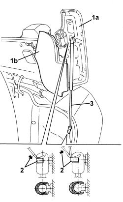

7025D15 TELESCOPIC STRUT FOR HOOD HOUSING COMPARTMENT COVER (ONE), LEFT OR RIGHT - R.R.
- Path
- Procedures > 70 FITTINGS > 7025 COMPARTMENT COVERS > 7025D HOOD HOUSING COMPARTMENT COVER > 7025D15 TELESCOPIC STRUT FOR HOOD HOUSING COMPARTMENT COVER (ONE), LEFT OR RIGHT - R.R.
- Kind
- repair procedure (removal / refitting; the operation number is the code)
- Applies to
- engines: 2.2 JTS, 3.2 JTS; all production periods
- Interactive page
- https://sloeber94.github.io/elrnDB-aBrrSpdr/en/#/946004080
Applies to: engines: 2.2 JTS, 3.2 JTS; all production periods
 Removing
Removing
 Refitting
Refitting- Prepare the hood for the operation.
Op. 0010T79 HOOD HYDRAULIC SYSTEM - DISCHARGE AND RESTORE PRESSURE
1 Using the electric control, place the hood housing cover (1a) in a fully raised position and the side cover (flap) (1b) in a lowered position (as illustrated).
2. Using a screwdriver, release the retaining clips from both ends of the telescopic strut (without removing them).
3. Remove the telescopic strut by disengaging it from the ball joints.

Applies to: engines: 2.2 JTS, 3.2 JTS; all production periods
Refitting
Removing- Check that the telescopic strut is not damaged.
- Engage the telescopic strut with the ball joints and fit the retaining clips.
- If discharged, restore the hood hydraulic system pressure.
Op. 7030H03 HOOD MANUAL OPENING FOLLOWING DEACTIVATION OF HYDRAULIC SYSTEM - CARRY OUT PROCEDURE
- Using the electric control, move the hood housing cover and check that it is working properly.
Topics linked from this page (2)
- 0010T79 HOOD HYDRAULIC SYSTEM - DISCHARGE AND RESTORE PRESSURE
- 7030H03 HOOD MANUAL OPENING FOLLOWING DEACTIVATION OF HYDRAULIC SYSTEM - CARRY OUT PROCEDURE